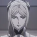
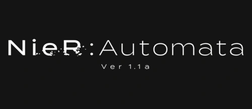

Imagen
Personaje
Seiyū


2B
9S
A2
Adán
Eva
Pod 042
Pod 153
Comandante White
Operador 60
Operador 210
Conferencia de la Humanidad
Lily
Jackass
Devola
Popala
Wata
Kin
Machiya
Pascal
Máquinas
Hermana menor
2B
9S
Pod 042
Yui Ishikawa
Natsuki Hanae
Ayaka Suwa
Daisuke Namikawa
Tatsuhisa Suzuki
Hiroki Yasumoto
Kaoru Akiyama
Chiaki Kanō
Keiko Isobe
Mary Hatsumi
Hiroki Yasumoto
Atsumi Tanezaki
Kaori Kawabuchi
Ryōko Shiraishi
Tomoaki Maeno
Maki Kawase
Mitsuki Nakamura
Aoi Yūki
Yukiko Motoyoshi
Hina Natsume
Yui Ishikawa
Natsuki Hanae
Hiroki Yasumoto